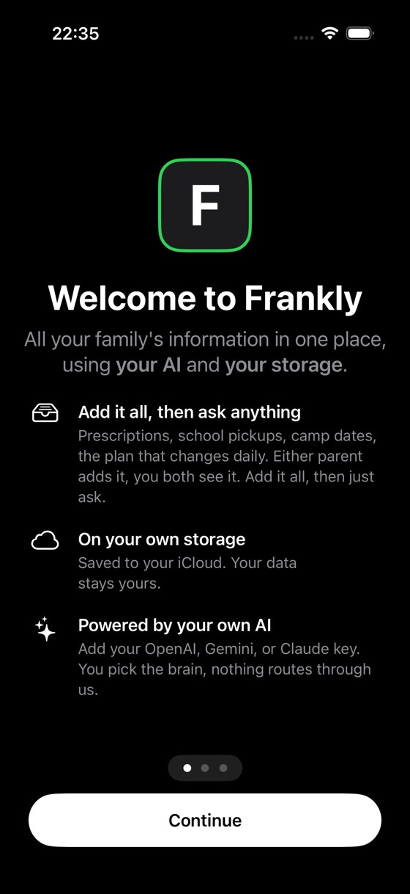

Berlin Bravo is an incubator for AI-first products — a test platform where foundation models, open-source models and agentic systems are pushed past their comfort zone, and the ideas that hold up become companies.
FIRST OUT OF THE SANDBOX ↓Get fit and fast, or fail.
Most AI demos die on contact with a real household, a real workload, a real Tuesday. We build in the opposite direction: real users from day one, frontier models held to shipping standards, and an engineering culture where a claim doesn’t count until a device in someone’s hand proves it.
We let the strongest models do what they’re capable of — and build the verification, safety and taste around them, not caps on top of them.
Open weights and on-device intelligence where privacy demands it. The right model for the moment, never a religion about whose.
Multi-agent build fleets, autonomous device testing, evidence-gated releases. Our own tooling is our first product testbed.
Leveraging one of Europe’s densest high-tech workforces to build AI-first companies from Ireland, for everywhere.
One assistant the whole household shares: it remembers what matters, keeps family data in the family, answers richly — and works the same whether you type, send a voice note, or just call it. Currently in private testing with real families.
Frankly is what the sandbox is for: an idea pushed until it survived. Many more are queued behind it.
VISIT FRANKLY →
YOUR FAMILY’S INFO · YOUR AI KEY · YOUR STORAGEA generation of engineers trained inside the world’s biggest technology companies, a time zone bridging two continents, and a moment where the cost of trying ambitious software ideas has collapsed. Berlin Bravo exists to convert that into products.
Not AI bolted onto an old idea. Frontier and open-source models sit at the core of the product from line one — the app is designed around what they can do, not around working past what they can’t.
Build it. Prove it. Ship it.
Every change is reproduced, tested, adversarially reviewed, and verified on real hardware before it reaches a person. A green checkmark isn’t proof — a device in someone’s hand is.
We test on the phones people actually hold, with real data and real network weather — not just simulators and happy-path demos. If it doesn’t work on the device, it doesn’t work.
Products that survive the next model, the next platform, and the next fashion. We own the durable layer — your data, the experience, the standards — so the AI underneath can be swapped without breaking what you rely on.